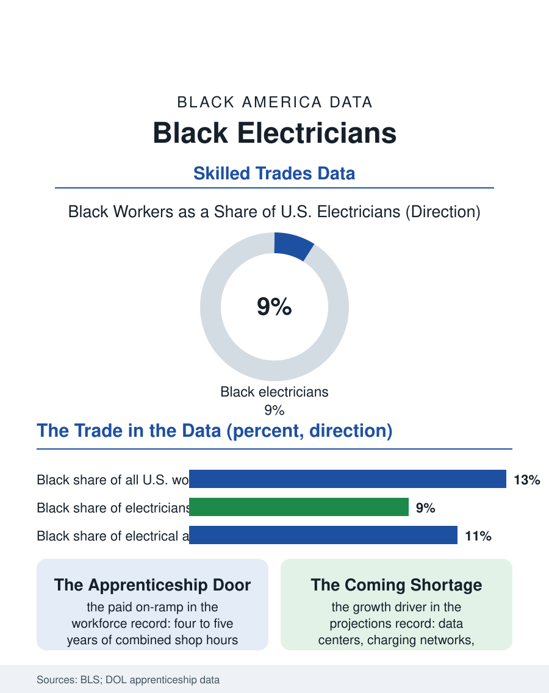

Black Employment
Wired In: Black Electricians and the Skilled Trades
Electricians earn among the highest wages in the trades, and Black workers hold under a tenth of the jobs. The electrician file, from apprenticeship intake to the electrification boom.

Every building in this atlas stands because someone wired it, and the someone, statistically, is rarely Black. Electricians are among the best-paid workers in America without a bachelor's degree, journeyman wages running well above the national median with overtime on top, and Black workers hold roughly eight or nine of every hundred of those jobs, about two-thirds of their share of the workforce overall. The trade is licensed, unionized in its upper reaches, and perpetually short-handed. This article reads the electrician file, a case study in how a good job stays hard to reach.
The License and the Ladder
Entry runs through apprenticeship: four to five years of paid work paired with classroom hours, administered by union joint training committees, nonunion shops, and community colleges. The Bureau of Labor Statistics outlines the structure plainly, and the workforce data show where the filter sits. Apprenticeship seats are allocated substantially through networks, contractors hiring the sons, nephews, and referrals of the existing workforce, a recruiting system that reproduces the incumbent demographics as faithfully as any formal barrier once did. Where joint committees adopted open, advertised, ranked application processes, the entering classes diversified measurably in the program evaluations, which is the file's first lesson: the trade's diversity follows its intake design, not the available interest. Black applicants present themselves in strong numbers wherever the door is visibly open, testing into pre-apprenticeship programs in the cities at rates above their population share. The second filter is endurance: the apprenticeship pays least exactly when a young worker with family obligations can least afford it, and completion data show attrition concentrated among apprentices carrying the heaviest financial loads, carrying also, often, the longest commutes to the job sites where the work is.
Union, Nonunion, and the Wage Map
The trade splits into two labor markets. Union electricians, organized through the IBEW's locals, work under negotiated scales that compress racial wage differences by construction: the rate is the rate, posted and identical. Nonunion residential and light commercial work, the faster-growing segment, pays individually negotiated wages, and there the earnings data show the familiar gaps reappearing. Black electricians are distributed across both markets, with historic concentration in the unionized construction of the industrial Midwest and Northeast and in public-sector maintenance, transit systems, utilities, and school districts, where civil service hiring rules long provided the fairest door in the trade. The self-employment exit is significant in the file: licensed Black master electricians founding shops of their own, a route into the business pages of this atlas where the contractor's license becomes an ownership asset. Bonding, insurance, and access to commercial bidding then replace the apprenticeship committee as the gate, and the same network effects reappear in business dress. The trade press records the shortage plainly: an aging workforce, data-center and electrification demand climbing, and contractors reporting unfilled calls. A shortage this size is, in principle, the strongest recruiting argument the trade has ever had.
The Electrification Wager
The forward file is unusually concrete. Federal infrastructure spending, grid modernization, electric vehicle charging networks, and building electrification all draw on the same licensed workforce, and the occupational projections place electricians among the faster-growing trades of the decade. Whether Black workers share proportionally in that growth is a design question now being answered in apprenticeship intake offices: registered programs with published openings, pre-apprenticeship pipelines run through Black community institutions and high school career academies, stipends and tool allowances that carry an apprentice through the lean first years, and licensing reciprocity that lets a worker follow the work across state lines. The women of the trade deserve their line here too: Black women electricians are a small fraction of a small fraction, and the tradeswomen's organizations that recruit and retain them run the same playbook, visibility, cohort, and mentorship, against the same intake mathematics. The electrician file closes on the trade's own saying, that the work cannot be outsourced and cannot be automated away. It can only be handed down. The data record whose hands it has been handed to so far, and the intake ledgers now being written will decide whether the next edition of this file reads differently.
The military deserves a footnote in this file, because the armed forces have quietly functioned as one of the trade's most integrated training grounds. Service members who wire bases, ships, and airfields leave with documented hours and certifications that many states credit toward licensure, and Black veterans use that bridge at meaningful rates. The civilian system has no equivalent open door at the same scale, which is precisely the comparison the file leaves on the table: the institution that recruits nationally, trains to a standard, and promotes by examination produces a measurably more representative trade workforce than the one that hires by referral.
More in Black Employment
The Black Unemployment Rate: The Two-to-One Pattern
Black unemployment runs at roughly twice the White rate — 5.5 percent against 3.3 percent in annual averages — a ratio stable across five decades of federal data. How it is measured and why it persists.
Black Median Weekly Earnings: The 80-Cent Ratio
Black full-time workers earn a median of about $900 a week — roughly 80 cents for every dollar White workers earn. The BLS earnings data by group, gender, and occupation.
Black Labor Force Participation: Working at National Rates
Black labor force participation runs at roughly the national rate — and Black women participate at higher rates than White women. The BLS participation data.
Source: U.S. Bureau of Labor Statistics, Current Population Survey and Occupational Outlook Handbook; U.S. Department of Labor registered apprenticeship data.